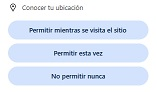

Ets al punt de no-retorn.
Has d'accelerar a 180km/h i tornar al futur.
Abans de moure't, Prem el botó "ACTIVAR GPS". quan aparegui:

prem PERMETRE i comença a córrer per, en menys de 10 segons estar a 30 metres del punt inicial.
Si ho fas, el Delorean arribarà als 180 km/h i tornaràs a la teva època.
Quan estiguis a punt de córrer, prem ACTIVAR GPS i CORRE! només son 10 segons.